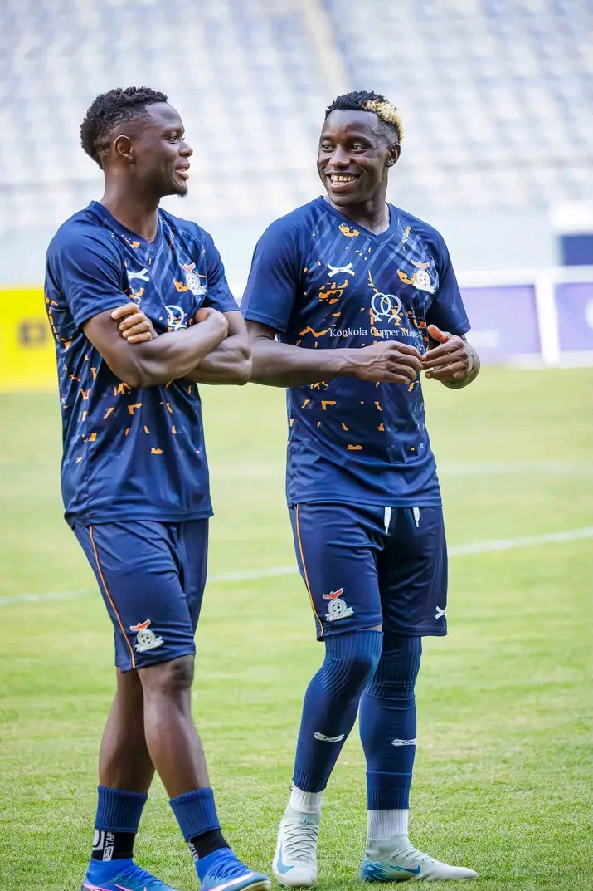

FOOTBALL
Inside the Beautiful Game
Match reports, team updates and the stories behind the action. Follow football from Zambia and around the world.
Read story →YOUR GAME. YOUR PASSION. YOUR NEWS.
Your home for football news, match-day stories, results and sports moments, with a special focus on Zambian and international football.
Explore Latest News Match Centre
THE LATEST
News, opinions and stories from the world of football.
FOOTBALL
Match reports, team updates and the stories behind the action. Follow football from Zambia and around the world.
Read story →
MATCH REPORT
Key chances, tactical changes and standout performances from the pitch.
Read story →
GRASSROOTS
Stories about community clubs, young talent and people helping to grow the game.
Read story →MATCH DAY
Check back for confirmed fixtures, kick-off times and results.
ZAMBIAN FOOTBALL
Fixture to be announced
INTERNATIONAL FOOTBALL
Fixture to be announced
FOLLOW YOUR FOOTBALL
Choose the competitions you want Sisco Media to cover.
Local clubs, domestic competitions and national-team stories.
News and analysis from major European leagues.
Continental tournaments and international football.
Community football, youth teams and emerging talent.
ABOUT SISCO MEDIA
Sisco Media is a sports-media platform focused on football. Our aim is to share clear, engaging and responsible coverage from local football to the international stage.
Our coverage can include match previews, reports, interviews, player profiles, opinion pieces and community sports stories.
STAY CONNECTED
Send us a tip, suggest a local team to cover or contact us about sports news.
Email: your-email@example.com
Location: Zambia
Social media: Add your official Facebook, TikTok, Instagram or WhatsApp links here.